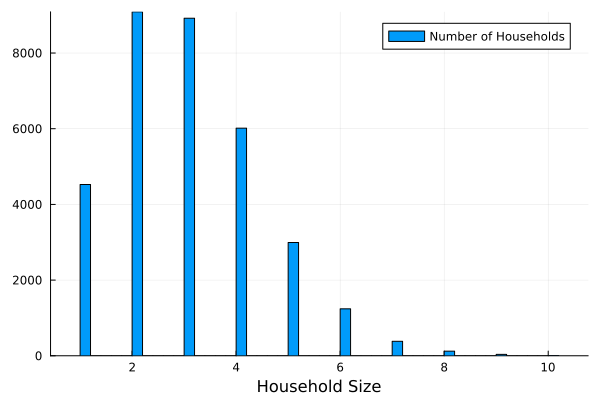

2 - Exploring Models
This tutorial shows you how to easily navigate through model components.
Exploring Individuals
Using the individuals() function on the simulation object is the easiest way to access the agents. The example below returns the vector of individuals:
using GEMS
sim = Simulation()
individuals(sim)Output
[ Info: 21:36:54 | Initializing Simulation [Simulation 1] with default configuration
and one custom parameter.
[ Info: 21:36:54 | └ Creating population
[ Info: 21:36:55 | └ Creating simulation object
100000-element Vector{Individual}:
Individual(1, 1, 6, -1, -1, 0.0f0, 0.0f0, Bool[], false, ...
Individual(2, 2, 19, -1, -1, 0.0f0, 0.0f0, Bool[], false, ...
⋮
Individual(99999, 2, 57, -1, -1, 0.0f0, 0.0f0, Bool[], false, ...
Individual(100000, 2, 37, -1, -1, 0.0f0, 0.0f0, Bool[], false, ...Please be aware that the individual id is NOT necessarily matching their index in the individuals-vector.
If you are interested in a particular attribute (e.g., the age) of all individuals, you can call the respective getter-function on the vector using a . which applies is to all individuals:
using GEMS
sim = Simulation()
inds = individuals(sim)
age.(inds)Output
[ Info: 21:40:00 | Initializing Simulation [Simulation 2] with default configuration
and one custom parameter.
[ Info: 21:40:00 | └ Creating population
[ Info: 21:40:02 | └ Creating simulation object
100000-element Vector{Int8}:
61
67
⋮
59
12Put a ? into the Julia REPL and call help?> Individual to get an overview of fields that are stored for each individual or look up the Individuals section of the API documentation. Allmost every field has a function of the same name (e.g.g, age()) to get its value
A more comprehensive overview of the individuals in a population can be achieved via the Population-object. The example below generates a dataframe with one row per individual in the population:
using GEMS
sim = Simulation()
pop = population(sim)
dataframe(pop)Output
[ Info: 21:40:37 | Initializing Simulation [Simulation 3] with default configuration
and one custom parameter.
[ Info: 21:40:37 | └ Creating population
[ Info: 21:40:39 | └ Creating simulation object
100000×10 DataFrame
Row │ id sex age number_of_vaccinations vaccination_tick education ⋯
│ Int32 Int8 Int8 Int8 Int16 Int8 ⋯
────────┼─────────────────────────────────────────────────────────────────────────────
1 │ 1 2 43 0 -1 -1 ⋯
2 │ 2 1 50 0 -1 -1 ⋯
⋮ │ ⋮ ⋮ ⋮ ⋮ ⋮ ⋮ ⋮
99999 │ 99999 1 5 0 -1 -1 ⋯
100000 │ 100000 1 42 0 -1 -1 ⋯
99996 rows omitted Additionally, there are a number of functions allowing you to check an individual's infection- or quarantine status. This example checks if the first individual in the list of individuals is infected:
using GEMS
sim = Simulation()
first_ind = individuals(sim) |> first
infected(first_ind)Output
[ Info: 21:42:31 | Initializing Simulation [Simulation 4] with default configuration
and one custom parameter.
[ Info: 21:42:31 | └ Creating population
[ Info: 21:42:35 | └ Creating simulation object
falseOther useful status check functions are exposed(), infectious(), isquarantined(), quarantine_status(), hospital_status(), hospitalized(), ventilated(), dead(), isdetected(), and isvaccinated(). For a full list, please look up the Individuals section of the API documentation.
Individuals are associated with at least one setting (the household). You can access them using the respective access functions. Please note, that these setting access functions require the Simulation object to be passed (for internal performance reasons).
using GEMS
sim = Simulation()
first_ind = individuals(sim) |> first
household(first_ind, sim)Output
[ Info: 21:43:20 | Initializing Simulation [Simulation 5] with default configuration
and one custom parameter.
[ Info: 21:43:20 | └ Creating population
[ Info: 21:43:21 | └ Creating simulation object
Household
id: Int32 1
individuals: Array{Individual}((3,))
income: Int8 -1
dwelling: Int8 -1
last_infectious: Int16 -1
contact_sampling_method: ContactparameterSampling
ags: AGS
lon: Float32 NaN32
lat: Float32 NaN32
isactive: Bool false
isopen: Bool true
lock: ReentrantLockAlso try office(i), schoolclass(i), or municipality(i). If an individual is not assigned to the respective setting (e.g., a child not being assigned to an office), these functions will throw an exception. You can make sure to not call these functions for individuals without a valid assignment by verifying is_working(i) or is_student(i) first.
Adjusting Individuals
You can esaily adjust individuals' attribute values. This example selects the first individual from the list of individuals and updates its age to 15:
using GEMS
sim = Simulation()
first_ind = individuals(sim) |> first
first_ind.age = 15Please only touch individuals' attribute values if you really know what you are doing. This can potentially invalidate input population models or result in errors when the internal model structure is compromised (e.g., by assigning individuals to non-existent settings)
More elaborate ajustments can be made using the each! function on the Population object. Please look up the "Creating Populations" tutorial to learn how to ajust populations.
Exploring Settings
Here's how you access all settings that are available in a given simulation:
using GEMS
sim = Simulation()
settings(sim)Output
[ Info: 21:44:52 | Initializing Simulation [Simulation 6] with default configuration
and one custom parameter.
[ Info: 21:44:52 | └ Creating population
[ Info: 21:44:54 | └ Creating simulation object
Dict{DataType, Vector{Setting}} with 3 entries:
Household => [Household(1, Individual[Individual(1, 2, 29, -1, -1, 0.0, 0.0, Bool[],…
SchoolClass => [SchoolClass(1, Individual[Individual(9, 1, 7, -1, -1, 0.0, 0.0, Bool[],…
Office => [Office(1, Individual[Individual(1, 2, 29, -1, -1, 0.0, 0.0, Bool[],…The above example returns a dictionary where the key is the setting type and the value being the list of settings of that type. If you want a particular setting type, you can either pass the respective key to the settings dictionary like settings(sim)[Household] or use the prefined access functions, e.g., households(sim):
using GEMS
sim = Simulation()
households(sim)Output
[ Info: 21:45:33 | Initializing Simulation [Simulation 7] with default configuration
and one custom parameter.
[ Info: 21:45:33 | └ Creating population
[ Info: 21:45:35 | └ Creating simulation object
33334-element Vector{Setting}:
Household
id: Int32 1
individuals: Array{Individual}((2,))
income: Int8 -1
dwelling: Int8 -1
last_infectious: Int16 -1
contact_sampling_method: ContactparameterSampling
ags: AGS
lon: Float32 NaN32
lat: Float32 NaN32
isactive: Bool false
isopen: Bool true
lock: ReentrantLock
⋮Similar to what we did with the individuals, you can run analyses on a collection of settings calling getter functions (e.g., size(s)) for a vector of settings using .. In the example below, we extract the size (number of assigned individuals) for each household and plot them in a histogram:
using GEMS, Plots
sim = Simulation()
hhlds = households(sim)
hh_sizes = size.(hhlds)
histogram(hh_sizes, xlabel = "Household Size", label = "Number of Households")Plot

Traversing
The previous examples demonstrated how you get from an individual to its settings. Of course, you can go the other way around and access all individuals of a setting. Moreover, you can traverse through the bi-partite graph (of individuals and settings) which is an important feature, e.g., to propagate intervention measures. Here's an example how to get the household members of an individual. To make sure, the individual is not living in a single-person houshold, we increase the average household size in our experiment. the id.() function gives us the IDs of all members (just for better readability). You see that the first ID is 1, as we select the first individual in the list and look into their household:
using GEMS
sim = Simulation(avg_household_size = 10)
first_ind = individuals(sim) |> first
hh = household(first_ind, sim)
hh_members = individuals(hh)
id.(hh_members)Output
[ Info: 21:50:17 | Initializing Simulation [Simulation 9] with default configuration
and custom parameters.
[ Info: 21:50:18 | └ Creating population
[ Info: 21:50:20 | └ Creating simulation object
10-element Vector{Int32}:
1
20643
23586
⋮
57705
87052
94858